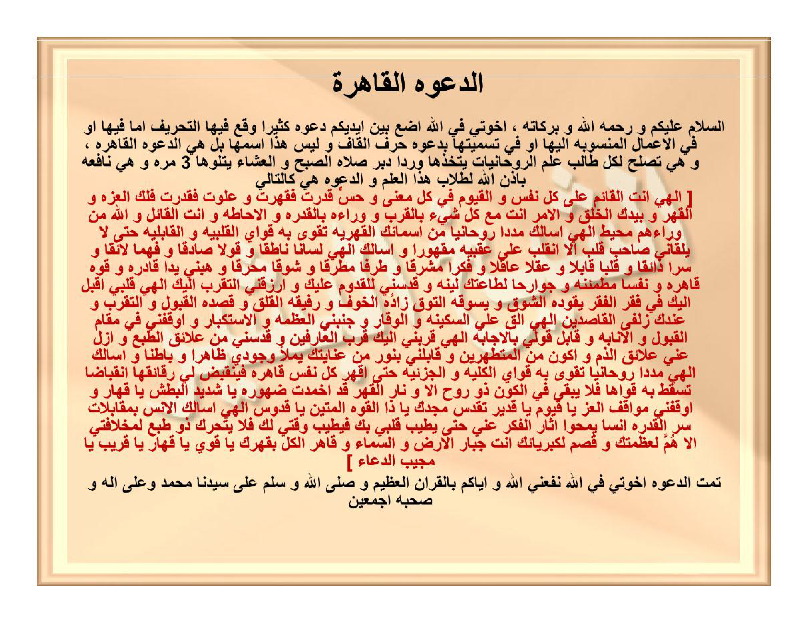

Ad-da'watul-qāhiratu.
As-salāmu 'alaikum wa rahmatullāhi wa barakātuhū, ikhwatī fillāhi adha'u baina aidīkum da'watan katsīran waqa'a fīhat-tahrīfu immā fīhā au fil-a'mālil-mansūbati ilaihā au fī tasmiyatihā bida'wati harfil-qāfi wa laisa hādzā-smahā bal hiyad-da'watul-qāhiratu, wa hiya tashluhu likulli thālibi 'ilmir-rūhāniyyāti yattakhidzuhā wirdan dubura shalātish-shubhi wal-'isyā'i yatlūhā 3 marratan wa hiya nāfi'atun bi-idznillāhi lithullābi hādzal-'ilmi wad-da'watu hiya kat-tālī:
[ Ilāhī antal-Qā'imu 'alā kulli nafsin wal-Qayyūmu fī kulli ma'nan wa hissin qadarta faqaharta wa 'alauta faqadarta falakal-'izzatu wal-qahru wa biyadikal-khalqu wal-amru anta ma'a kulli syai'in bil-qurbi wa warā'ahū bil-qudrati wal-ihāthati wa antal-qā'ilu wallāhu min warā'ihim muhīthun. Ilāhī as'aluka madadan rūhāniyyan min asmā'ikal-qahriyyati taqwā bihī quwāyal-qalbiyyatu wal-qābiliyyatu hattā lā yalqānī shāhibu qalbin illanqalaba 'alā 'aqibaihi maqhūran wa as'aluka ilāhī lisānan nāthiqan wa qaulan shādiqan wa fahman lā'iqan wa sirran dzā'iqan wa qalban qābilan wa 'aqlan 'āqilan wa fikran musyriqan wa tharfan muthriqan wa syauqan muhriqan wa habnī yadan qādiratan wa quwwatan qāhiratan wa nafsan muthma'innatan wa jawāriha lithā'atika layyinatan wa qaddisnī lil-qudūmi 'alaika warzuqnit-taqarruba ilaika. Ilāhī qalbī aqbala ilaika fī faqril-faqri yaqūduhusy-syauqu wa yasūquhut-tauqu zāduhul-khaufu wa rafīquhul-qalaqu wa qashduhul-qabūlu wat-taqarrubu wa 'indaka zulfal-qāshidīna. Ilāhī alqi 'alayyas-sakīnata wal-waqāra wa jannibnil-'azhamata wal-istikbāra wa auqifnī fī maqāmil-qabūli wal-inābati wa qābil qaulī bil-ijābati. Ilāhī qarribnī ilaika qurbal-'ārifīna wa qaddisnī min 'alā'iqith-thab'i wa azil 'annī 'alā'iqadz-dzammi wa akūna minal-mutathahhirīna wa qābilnī binūrin min 'ināyatika yamla'u wujūdī zhāhiran wa bāthinan. Wa as'aluka ilāhī madadan rūhāniyyan taqwā bihī quwāyal-kulliyyatu wal-juz'iyyatu hattā aqhara kulla nafsin qāhiratin fayanqabidha lī raqā'iquhā-nqibādhan tasquthu bihī quwāhā falā yabqā fil-kauni dzū rūhin illā wa nārul-qahri qad akhmadat zhuhūrahū yā Syadīdal-bathsyi yā Qahhāru wa auqifnī mawāqifal-'izzi yā Qayyūmu yā Qadīru taqaddasa majduka yā Dzal-quwwatil-Matīnu yā Quddūsu. Ilāhī as'alukal-unsa bimuqābalāti sirril-qudrati unsan yamhū ātsāral-fikri 'annī hattā yathība qalbī bika fayathība waqtī laka falā yataharraka dzū thab'in limukhālafatī illā humma li'azhamatika wa qushima likibriyā'ika anta Jabbārul-ardhi was-samā'i wa Qāhirul-kulli biqahrika yā Qawiyyu yā Qahhāru yā Qarību yā Mujībad-du'ā'i ]
Tammatid-da'watu ikhwatī fillāhi nafa'aniyallāhu wa iyyākum bil-Qur'ānil-'azhīmi wa shallallāhu wa sallama 'alā sayyidinā Muhammadin wa 'alā ālihī wa shahbihī ajma'īna.
Doa al-Qāhirah (yang menundukkan dengan perkasa).
Assalamu'alaikum warahmatullahi wabarakatuh. Wahai saudara-saudaraku karena Allah, aku letakkan di hadapan kalian sebuah doa yang sering kali mengalami penyimpangan (tahrīf), baik pada lafaz di dalamnya, pada amalan-amalan yang dinisbatkan kepadanya, maupun pada penamaannya dengan “Doa Huruf Qāf”; padahal bukan itu namanya, melainkan ia adalah “Ad-Da'watul-Qāhirah”. Doa ini sangat patut bagi setiap penuntut ilmu ruhaniyyah untuk dijadikan wirid setiap selesai shalat Subuh dan Isya dengan membacanya sebanyak 3 kali, dan ia sangat bermanfaat dengan izin Allah bagi para penuntut ilmu ini. Adapun doanya adalah sebagai berikut:
[ Tuhanku, Engkaulah Yang Mengawasi setiap jiwa, dan Yang Maha Berdiri Sendiri mengurus segala sesuatu pada setiap makna maupun indra; Engkau berkuasa lalu Engkau menundukkan, dan Engkau Maha Tinggi lalu Engkau berkuasa; maka hanya milik-Mu kemuliaan dan keperkasaan penundukan, serta di tangan-Mu segala penciptaan dan perintah. Engkau bersama segala sesuatu dengan kedekatan ilmu-Mu, dan di balik semuanya dengan kekuasaan serta peliputan-Mu; dan Engkaulah Yang berfirman: Padahal Allah mengepung dari belakang mereka — QS. al-Burūj: 20. Tuhanku, aku memohon kepada-Mu pancaran bantuan ruhani (madad rūhānī) dari Asma-Asma-Mu yang bersifat Qahriyyah (menundukkan), yang dengannya dikuatkan daya-daya kalbuku dan daya penerimaanku, sehingga tidak seorang pun pemilik hati (keberanian) yang berhadapan denganku melainkan ia berbalik ke belakang dalam keadaan tunduk takluk! Dan aku memohon kepada-Mu, Tuhanku, lisan yang fasih berbicara, perkataan yang benar, pemahaman yang patut, batin terdalam (sirr) yang merasakan manisnya ma'rifat, hati yang menerima kebenaran, akal yang cerdas memahami, pikiran yang bersinar terang, pandangan mata yang menunduk tawadhu', serta kerinduan yang membakar; dan karuniakanlah kepadaku tangan yang berkuasa, kekuatan yang menundukkan, jiwa yang tenang (nafs muthma'innah), serta anggota-anggota tubuh yang lembut patuh untuk menaati-Mu; sucikanlah aku untuk menghadap kepada-Mu, dan anugerahkanlah kepadaku kedekatan menuju-Mu. Tuhanku, hatiku datang menghadap kepada-Mu dalam puncak kefakiran, dituntun oleh kerinduan dan digiring oleh dambaan; bekalnya adalah rasa takut (khauf), temannya adalah kegelisahan harap, dan tujuannya adalah diterima serta didekatkan di sisi-Mu, sedangkan di sisi-Mu terdapat kedekatan derajat bagi orang-orang yang menuju kepada-Mu. Tuhanku, limpahkanlah ke atas diriku ketenangan (sakīnah) dan kewibawaan (waqār), jauhkanlah aku dari sifat angkuh merasa besar diri dan kesombongan (istikbār), tegakkanlah aku pada maqam diterima dan kembali bertaubat (inābah), serta sambutlah ucapanku dengan pengabulan (ijābah). Tuhanku, dekatkanlah aku kepada-Mu dengan kedekatan para 'ārifīn, sucikanlah aku dari ikatan-ikatan tabiat nafsu, hilangkanlah dariku ikatan-ikatan sifat tercela sehingga aku termasuk golongan orang-orang yang menyucikan diri, dan sambutlah aku dengan cahaya dari pertolongan perhatian-Mu ('ināyah) yang memenuhi seluruh keberadaanku secara lahir maupun batin. Dan aku memohon kepada-Mu, Tuhanku, pancaran bantuan ruhani yang dengannya dikuatkan daya-dayaku secara menyeluruh (kulliyyah) maupun terperinci (juz'iyyah), sehingga aku dapat menundukkan setiap jiwa yang menentang dengan perkasa, lalu menyusutlah lapisan-lapisan halusnya di hadapanku dengan penyusutan yang meruntuhkan kekuatan-kekuatannya, sehingga tidak tersisa di alam semesta ini satu makhluk bernyawa pun melainkan api keperkasaan (nārul-qahr) telah memadamkan penampakannya; wahai Dzat Yang Sangat Keras siksaan-Nya, wahai Yang Maha Menundukkan! Dan tegakkanlah aku di tempat-tempat kemuliaan, wahai Yang Maha Berdiri Sendiri, wahai Yang Maha Kuasa; Mahasuci keagungan kemuliaan-Mu, wahai Pemilik Kekuatan lagi Maha Kokoh, wahai Yang Mahasuci. Tuhanku, aku memohon kepada-Mu ketenteraman batin (al-uns) dalam menyaksikan tajalli rahasia kekuasaan-Mu, dengan ketenteraman yang menghapuskan jejak-jejak kerisauan pikiran dariku, sehingga hatiku menjadi tenteram bersama-Mu dan waktuku menjadi baik bagi-Mu; maka tidaklah bergerak satu pemilik tabiat pun untuk menentangku melainkan ia diluluhkan karena keagungan-Mu dan dipatahkan karena kebesaran-Mu; Engkaulah Penguasa Yang Maha Perkasa di bumi dan di langit serta Penakluk segala sesuatu dengan keperkasaan-Mu; wahai Yang Maha Kuat, wahai Yang Maha Menundukkan, wahai Yang Maha Dekat, wahai Yang Maha Mengabulkan doa ].
Selesailah doa tersebut, wahai saudara-saudaraku karena Allah. Semoga Allah memberikan manfaat kepadaku dan kepada kalian dengan Al-Qur'an yang agung, serta semoga Allah melimpahkan shalawat dan salam atas junjungan kita Muhammad beserta keluarga dan seluruh sahabat beliau.
